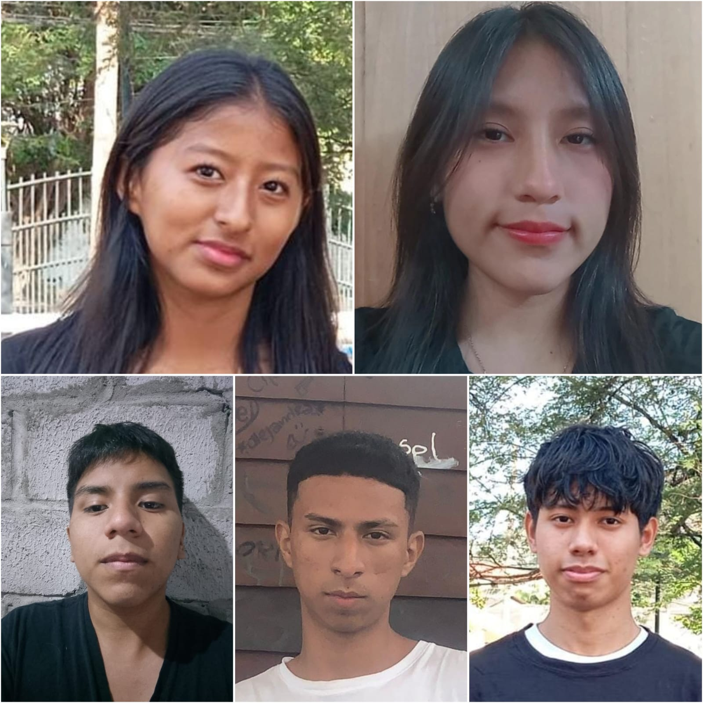

¿Quiénes somos?
*Sobre nosotros
Nosotros somos jovenes emprendedores contribuyentes que juntos conformamos la empresa "El Café De Eva" que se dedican a la venta de café,en este caso seria un tipo de café muy especial que solo se cosecha una vez al año llamado "café arábigo. Somos estudiantes de la Unidad Educativa Fiscal Dolores Sucre y tenemos como objetivo dar a conocer nuestro producto a todas las personas amantes del café.

1Estamos conformados por:
-Pazmiño Jorge
-González Derick
-Solis Keysi
-Rodrguez Emily
-Guerrero Josue